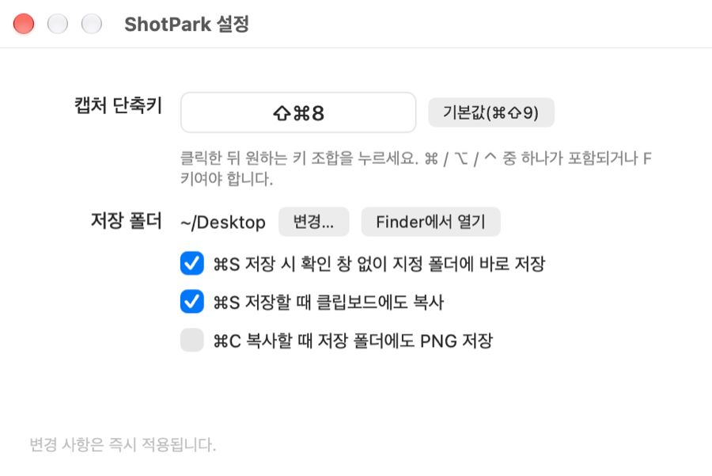
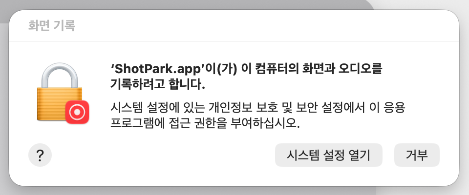
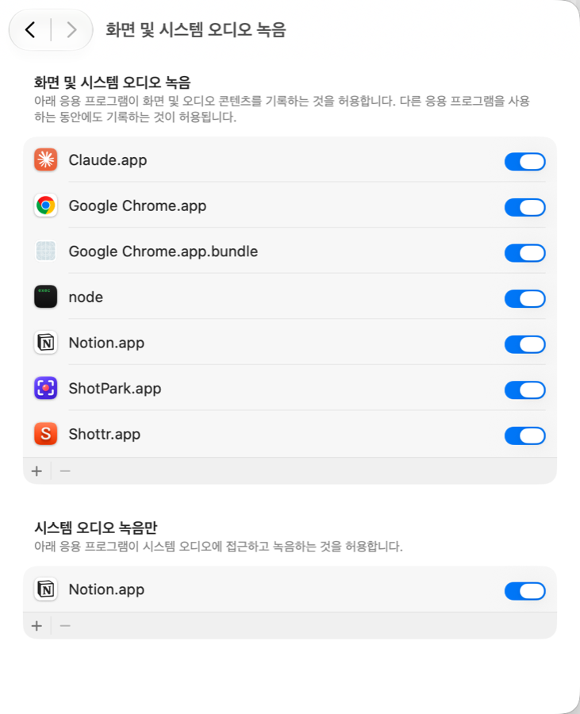

ShotPark
단축키 한 번으로 영역을 선택하여 캡처하고, 바로 표시하여, 빠르게 공유하세요!
Apple Silicon · Intel 모두에서 돌아가는 맥 네이티브 앱입니다.
Windows에서 PicPick·Lightshot을 쓰셨다면, macOS에서는 ShotPark.

ShotPark으로 캡처하고 표시한 실제 결과물. ⌘⇧9를 누르고 지도 위를 드래그한 뒤, 원·화살표·텍스트를 넣고 ⌘C로 복사하면 끝.
기능
단축키 한 번, 드래그 한 번
기본 ⌘⇧9. 화면이 어두워지면 드래그로 영역을 잡거나, 창을 클릭해 통째로 선택. 핸들로 크기 조절, 안쪽 드래그로 이동, 방향키로 1px 미세 조정. 픽셀 크기가 실시간으로 표시됩니다.
바로 주석
펜 · 선 · 화살표 · 사각형 · 타원 · 마커 · 텍스트(여러 줄) · 번호 스탬프 · 이모지 도장 · 이미지 도장(서명·로고, 크기·회전 자유), 모자이크·블러로 개인정보 가리기, 10색 팔레트(설정에서 내 색으로 변경), 선 굵기 3단계 + 점선, 화살표 머리 꺾쇠(>)/원형, 실행 취소/다시 실행. 넣은 주석은 드래그로 옮기고, 지우개나 Delete로 골라 지우며, 선택하면 굵기·점선·색상도 다시 바꿀 수 있습니다. 텍스트는 크기 프리셋 3개 + 직접 입력, 그림자 · 외곽선 · 배경(마스킹) 토글 조합. 화면에 보이는 그대로 내보냅니다.
복사 · 저장 · 공유
⌘C로 클립보드, ⌘⇧C로 글자만 텍스트로 추출(OCR), ⌘S로 지정 폴더에 즉시 PNG 저장, ⌘⇧S로 Claude · ChatGPT · Gemini · Slack · 카카오톡 또는 macOS 공유 시트.
클립보드 이미지 기록
⌃⌘V로 최근 복사한 이미지 30개를 썸네일로. 다른 앱에서 복사한 이미지도 모이고, 클릭하면 다시 복사, 드래그하면 다른 앱에 바로 넣기. 내 맥에만 저장됩니다.
Retina · 다중 모니터
ScreenCaptureKit으로 각 디스플레이의 실제 해상도 그대로 캡처합니다. 모니터가 몇 대든 같은 방식.
내 맘대로 설정
캡처 단축키, 저장 폴더, 바로 저장 여부, 주석 색상 팔레트를 설정 창에서 변경. 로그인 시 자동 실행 옵션. 새 버전이 나오면 메뉴에 알려줍니다. 한국어 · 영어 UI는 macOS 언어를 따라 자동 선택.
가볍고 투명하게
Swift/AppKit 파일 13개, 외부 라이브러리 0개. Dock에 안 뜨고 메뉴 막대에만 있습니다. 온라인 업로드 없음.

설정 창 (⌘,). 단축키 박스를 클릭하고 원하는 조합을 누르면 바로 적용됩니다. 저장 폴더, 바로 저장, 저장↔복사 연동도 여기서.
픽픽 · 라이트샷과 비교하면
한국에서 가장 많이 쓰는 캡처 프로그램 픽픽은 Windows 전용이라 맥 버전이 없고, 라이트샷의 맥 앱은 Intel 빌드라 Apple Silicon 맥에서는 Rosetta가 필요합니다. ShotPark은 그 둘의 "단축키 → 드래그 → 바로 주석 → 복사" 흐름을 맥 네이티브로 그대로 옮긴 앱입니다.
| macOS 기본 캡처 | 픽픽 | 라이트샷 | CleanShot X | ShotPark | |
|---|---|---|---|---|---|
| 맥 지원 | ● | ✕ Windows 전용 | △ Intel 빌드 | ● | ● 유니버설 (Apple Silicon · Intel) |
| 가격 | 무료 | 개인 무료 | 무료 | 유료 (US$29~) | 무료 · 오픈소스(MIT) |
| 캡처 직후 그 자리에서 주석 | △ 마크업 창 따로 | △ 편집기 창 따로 | ● | ● | ● |
| 클립보드 복사가 기본 | ✕ 파일 저장이 기본 | △ 설정 | ● | ● | ● ⌘C 또는 Enter |
| 모자이크·블러 · 텍스트 추출(OCR) | ✕ | △ 모자이크만 | ✕ | ● | ● |
| 텍스트 배경(마스킹) · 번호 · 이모지 스탬프 | ✕ | △ 일부 | ✕ | ● | ● |
| Claude · ChatGPT · Gemini · Slack · 카카오톡 바로 공유 | ✕ | ✕ | ✕ | ✕ | ● |
| 온라인 업로드 없음 (로컬 처리) | ● | △ 선택 | △ prnt.sc 업로드 있음 | △ 클라우드 선택 | ● 업로드 기능 자체가 없음 |
| 영어 · 한국어 UI | ● | ● | △ | △ 영어 | ● |
픽픽의 자(ruler) · 색상 추출 · 화이트보드 같은 부가 도구는 ShotPark에 없습니다. 영역 캡처와 주석, 공유에만 집중합니다. 2026년 10월 기준 각 제품의 공개 정보로 작성했으며, 정확하지 않은 부분이 있으면 알려주세요.
단축키
| 동작 | 키 |
|---|---|
| 영역 캡처 시작 | ⌘⇧9 (설정에서 변경) · 메뉴 막대 아이콘 |
| 클립보드 이미지 보기 | ⌃⌘V |
| 모자이크·블러 도구 / 텍스트 추출 (캡처 중) | B / ⌘⇧C |
| 전체 화면 선택 | ⌘A |
| 펜 / 선 / 화살표 / 사각형 / 타원 / 마커 / 텍스트 / 번호 / 이모지 / 지우개 | P L A R E M T N S X |
| 텍스트 줄바꿈 (입력 중) | ⇧↩ |
| 선택(이동·크기조절) 모드 | V 또는 활성 도구 다시 클릭 |
| 클립보드로 복사 후 닫기 | ⌘C 또는 Enter |
| 이미지를 도장으로 붙여넣기 (복사한 서명 등) | ⌘V |
| PNG 저장 | ⌘S |
| 공유 메뉴 | ⌘⇧S |
| 창 통째로 선택 | 드래그 대신 창을 클릭 |
| 영역 / 선택한 주석 미세 이동 | 방향키 (⇧와 함께 10px) |
| 주석 옮기기 / 삭제 / 텍스트 다시 편집 | 드래그 / Delete / 더블클릭 (선택 도구) |
| 다시 실행 | ⌘⇧Z |
| 텍스트 · 도장 크기 키우기 / 줄이기 | ⌘+ / ⌘- |
| 선택한 텍스트 · 도장 회전 (15°) | ⌘[ / ⌘] |
| 실행 취소 | ⌘Z |
| 취소 | Esc · 우클릭 |
설치
설치 방법
1) CLI — 최신 버전 다운로드 → 응용 프로그램 폴더 → 격리 플래그 해제 → 실행:
curl -fsSL https://shotpark.site/install.sh | sh2) Homebrew
brew install --cask chiyodad/tap/shotpark3) 다운로드 — 최신 릴리즈에서 ShotPark-x.y.z.zip을 받아 압축을 풀고 ShotPark.app을 응용 프로그램 폴더로 옮깁니다.
Gatekeeper 통과하기 (최초 1회)
3) 다운로드로 설치한 경우에만 해당합니다. 1) CLI · 2) Homebrew로 설치했다면 이 단계는 자동 처리되므로 건너뛰세요.
ShotPark은 Apple 개발자 서명이 없는 오픈소스 앱이라 처음 열 때 macOS가 "확인할 수 없는 개발자"라며 막습니다. 아래 둘 중 편한 방법으로 한 번만 열어 주면 그 뒤로는 묻지 않습니다.
방법 A — 터미널 한 줄 (가장 확실):
xattr -d com.apple.quarantine /Applications/ShotPark.app방법 B — 설정에서 허용: 앱을 한 번 더블클릭해 경고를 닫은 뒤, 시스템 설정 → 개인정보 보호 및 보안 맨 아래에 나타나는 "그래도 열기"를 누릅니다.
화면 기록 권한 부여
첫 캡처(⌘⇧9) 때 아래 창이 뜹니다. "시스템 설정 열기"를 누르고 목록에서 ShotPark을 켜 주세요. 켠 뒤 앱을 한 번 종료했다가(메뉴 막대 아이콘 → ShotPark 종료) 다시 실행하면 바로 캡처됩니다.


소스에서 직접 빌드해도 2단계가 필요 없습니다. Xcode Command Line Tools만 있으면 됩니다.
git clone https://github.com/chiyodad/shotpark.git
cd shotpark
./build.sh --install자주 묻는 질문
단축키를 눌러도 아무 일도 안 일어나요
화면 기록 권한이 아직 없는 경우입니다. 메뉴 막대 아이콘 → "화면 기록 권한 설정…"에서 ShotPark을 켜고 앱을 재실행하세요. 다른 앱이 같은 전역 단축키를 쓰고 있다면 설정에서 조합을 바꿔 보세요.
"손상되었기 때문에 열 수 없습니다"라고 떠요
다운로드한 파일에 붙는 격리 속성 때문입니다. 설치 2단계의 xattr -d com.apple.quarantine /Applications/ShotPark.app으로 해제하면 됩니다.
업데이트했더니 화면 기록 권한을 다시 물어봐요
정상입니다. 서명이 바뀐 새 빌드는 macOS가 새 앱으로 취급해서 한 번 더 묻습니다. 켜 주고 앱을 재실행하면 됩니다.
Slack / 카카오톡 / ChatGPT / Gemini 공유는 어떻게 동작하나요?
이미지를 클립보드에 복사한 뒤 해당 앱에 파일을 넘깁니다. Slack처럼 파일을 받는 앱은 업로드 창이 바로 뜨고, 받지 않는 앱은 앞으로 올라오기만 하므로 ⌘V로 붙여넣으면 됩니다. ChatGPT·Gemini 앱이 없으면 웹이 열리니 거기서 ⌘V 하세요.
픽픽이나 라이트샷을 쓰다 왔는데, 뭐가 같고 뭐가 다른가요?
같은 것: 전역 단축키 → 드래그로 영역 → 그 자리에서 화살표·사각형·텍스트 → 클립보드 복사. 픽픽의 "영역 캡처 후 바로 편집", 라이트샷의 "캡처 즉시 주석"과 같은 흐름이고, 창을 클릭하면 창 전체가 잡히는 것도 같습니다. 다른 것: 단축키 기본값이 ⌘⇧9이고(설정에서 원하는 조합으로 변경), 픽픽의 자·색상 추출·화이트보드·스크롤 캡처는 없으며, 라이트샷의 prnt.sc 업로드도 없습니다. 모든 처리는 맥 안에서만 끝납니다.
Intel 맥은요?
됩니다. 1.9.2부터 릴리즈가 유니버설(Apple Silicon + Intel) 바이너리라 같은 zip, 같은 설치 명령을 쓰면 됩니다.
온라인 링크로 공유할 수 있나요?
아니요. 의도적으로 모든 처리를 로컬에서만 합니다. 공유는 클립보드, 파일, macOS 공유 시트를 통해서만 이뤄집니다.